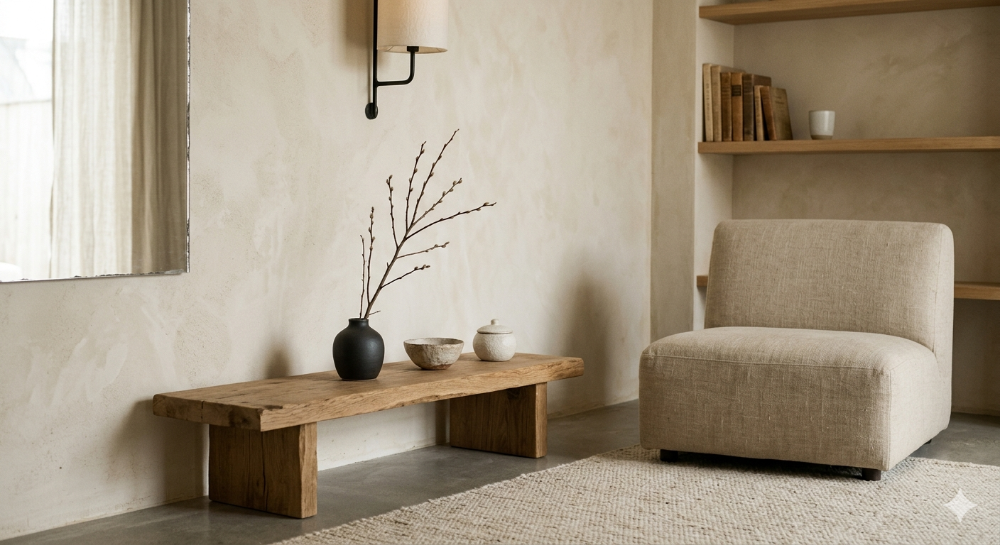
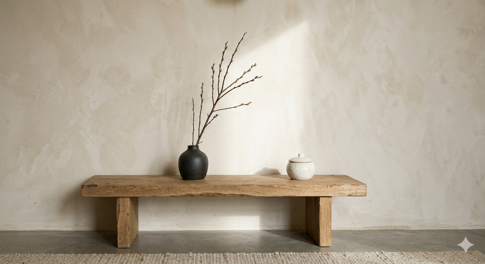

Why
我們相信，每個大人與孩子
都需要一段不被定義的慢日常。
「泥土會誠實，你也會。」在熟悉的手感裡，讓繁忙的心靜下來。我們將溫柔的材料與緩慢的節奏，留給每一個需要喘息的片刻。

泥日・小陶器製所 × 森林家族
用雙手，為你的小動物
捏一個溫暖的小家。
「泥土會誠實，你也會。」在熟悉的手感裡，讓繁忙的心靜下來。我們將溫柔的材料與緩慢的節奏，留給每一個需要喘息的片刻。
我們讓陪伴發生在你的呼吸與工作室中。經過手捏陶、揉土與燒製，讓一塊普通的泥土，成為陪你很久很久的小物。
我們帶來小小尺寸、恰好比例的手作器皿，從杯盤到花器，讓你的小動物有一個屬於自己的溫暖餐桌。

你也曾感受過，空間裡堆滿了制式的小物，卻找不到真正屬於自己的生活感嗎？

精緻的公仔值得一張真正的小餐桌，而不是冷冰冰的量產塑膠。想把生活過得更像自己嗎？
「讓器物與生活，慢慢變老。」透過親手體驗，為日常留下帶著指紋與溫度的記憶。
每件器物都保有不完美的溫度，細緻得像是從故事裡走出來。
溫潤釉色、自然土色，讓生活多一點手感。
每一件皆經雙手慢慢完成，沒有兩件會完全相同。
從挑選到成品，都是為你的喜好而生。
不只是可愛的小物，也是一份能長久陪伴的心意。
讓每一次擺放，都變成療癒的小儀式。
「來自手捏，我們深知，熱愛手作與生活的你，對文字的細膩度、生活的美感，以及產品的安全性有著極高的要求。
我們堅持在自己的在地陶藝工作室，從泥土到成品慢慢完成。
選用安心的原料與釉色，讓每個作品都能放心陪伴。
你不必追求完美，只要讓雙手記得此刻的心情。
用時間等待每一件器物成熟，留下溫潤且獨特的色澤。
這一次，不只是大人的日常體驗。帶上你的好奇心與想像力，用小小雙手捏出大大的幸福！
從零開始的 2 小時手捏陶課，完成 1:12 比例器皿。
◷ 2 小時 ◉ 費用 NT$ 980 起親子一起完成你的午茶組合，留下柔軟的回憶。
◷ 2 小時 ◉ 費用 NT$ 880 起